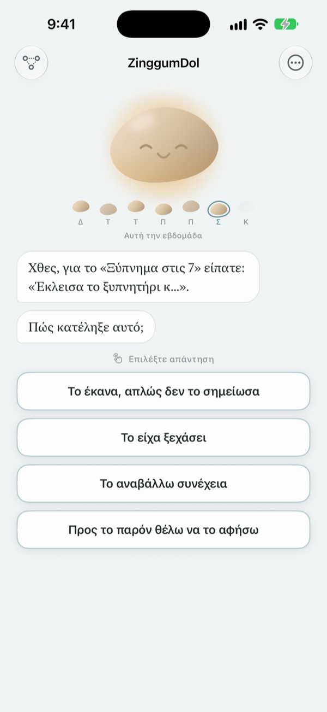
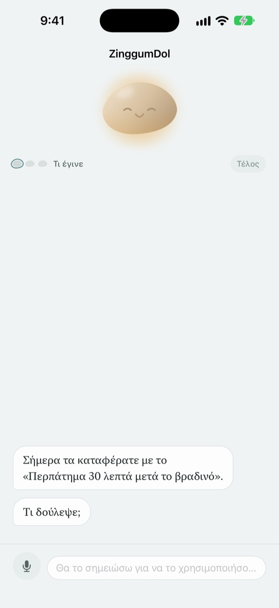
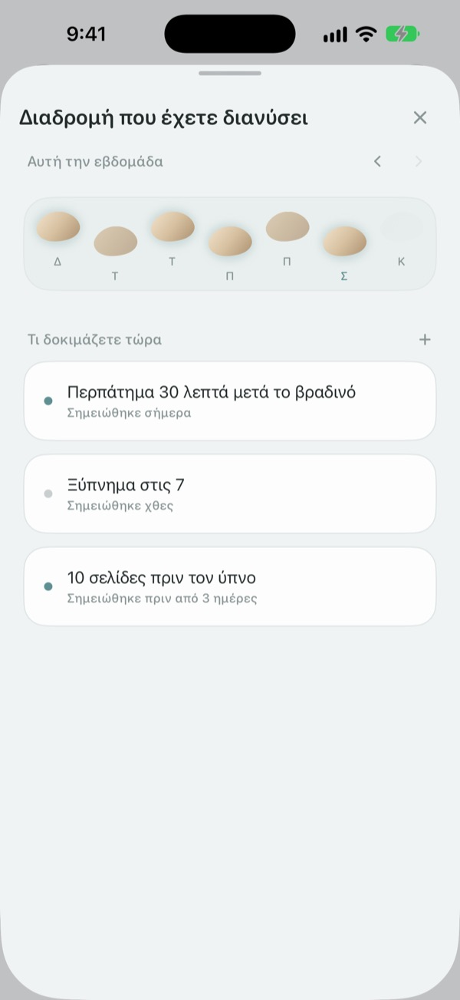
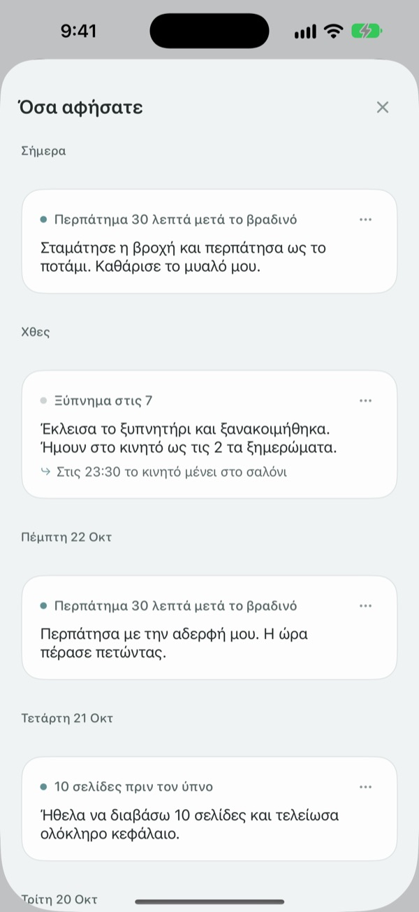

Ένα στραβοπάτημα δεν σημαίνει
ότι πέσατε στο ρυάκι
Τη μέρα που χάνετε τον στόχο σας, το βότσαλο μιλά πρώτο. Ρωτά τι έγινε, όχι τι κάνατε λάθος, και σας επιστρέφει τα γεγονότα και τα συναισθήματα χωριστά.
Οι κουβέντες, οι σημειώσεις και η διαδρομή σας είναι δωρεάν. Χωρίς εγγραφή και διαφημίσεις.

Μιλήστε με το βότσαλο
Σήμερα σκοπεύατε να κάνετε βραδινή βόλτα, αλλά δεν έγινε. Πατήστε μια απάντηση ή γράψτε τη δική σας, και το βότσαλο απαντά όπως ακριβώς στην εφαρμογή.
Όταν μια μέρα δεν πάει όπως την σχεδιάσατε, κατηγορείτε τον εαυτό σας;
Το βράδυ που χάσατε την προπόνηση, η πρώτη σκέψη είναι συνήθως «τι πρόβλημα έχω;». Αν το δείτε πιο προσεκτικά, υπήρξαν υπερωρίες, έβρεχε, ήσασταν εξαντλημένοι. Το ZinggumDol ρωτά χωριστά τι έγινε και πώς νιώθετε και βάζει τα δύο δίπλα δίπλα. Όταν βλέπετε ότι έφταιγαν οι συνθήκες και όχι η θέλησή σας, το επόμενο μικρό βήμα βρίσκεται πιο εύκολα.
Το βότσαλο μιλά πρώτο
Ορίστε έναν στόχο και το βότσαλο θα παρακολουθεί τις μέρες που τα καταφέρατε και εκείνες που κολλήσατε. Όταν μια μέρα σας ξεφεύγει, ρωτά «τι έγινε;» αντί για «γιατί όχι;», και θυμάται τι του είπατε την προηγούμενη φορά.
Τις μέρες που το γράψιμο είναι βαρύ, πείτε το φωναχτά. Η ομιλία αναγνωρίζεται στη συσκευή σας και οι ηχογραφήσεις δεν αποθηκεύονται ποτέ.

Οι μέρες σας σαν πέτρες στο ρυάκι
Κάθε εβδομάδα απλώνεται σαν σειρά από πέτρες. Οι μέρες που δεν πατήσατε μένουν κι αυτές εκεί· τίποτα δεν σβήνεται.
Ακόμα κι αν λείπει μία ή δύο, βλέπετε ότι ο δρόμος συνεχίζεται.

Ξαναδιαβάστε όσα γράψατε
Τι έγινε, πώς νιώσατε και τι θα δοκιμάσετε μετά συγκεντρώνονται κατά ημερομηνία. Ξαναδιαβάστε μια μέρα που κολλήσατε με τον ίδιο τρόπο και θα δείτε τι βοήθησε.
Ένα widget δείχνει μια κουβέντα του βότσαλου στην οθόνη Αφετηρίας, και μια υπενθύμιση την ώρα που διαλέγετε σας καλεί να κοιτάξετε πίσω τη μέρα.

Τρία βήματα για να ξεκινήσετε
- 1
Γράψτε έναν στόχο
Για παράδειγμα «Περπάτημα 30 λεπτά μετά το βραδινό».
- 2
Ανοίξτε την εφαρμογή το βράδυ
Το βότσαλο ρωτά πώς πήγε η μέρα. Με μια υπενθύμιση δεν θα το ξεχάσετε.
- 3
Πατήστε ή γράψτε την απάντηση
Μπορείτε να σταματήσετε όποτε θέλετε με το
Προς το παρόν θέλω να το αφήσω.
Πώς κυλά μια συζήτηση
- Τι έγινε
- Μόνο τα γεγονότα: τι μπήκε στη μέση
- Συναίσθημα
- Πώς νιώθετε τώρα, σε μια κλίμακα πέντε βαθμίδων
- Αναδρομή
- Το βότσαλο σας επιστρέφει τι έγινε και τι νιώθετε, χωριστά
- Επόμενο βήμα
- Διαλέγετε εσείς κάτι μικρό, πέντε λεπτά αρκούν
- Κλείσιμο
- Σε μια πολύ βαριά μέρα δεν ρωτά τίποτε άλλο και προτείνει ξεκούραση
Μπορείτε να βγείτε οποιαδήποτε στιγμή, και όσα είπατε ως τότε μένουν αποθηκευμένα.
Κουβέντες και σημειώσεις δωρεάν. Pro αν θέλετε κάτι παραπάνω.
Δωρεάν
- Όλες οι κουβέντες με το βότσαλο
- Έως τρεις στόχοι
- Μιλήστε αντί να πληκτρολογείτε
- Η διαδρομή σας και όσα έχετε γράψει
- Widget και καθημερινή υπενθύμιση
- Κλείδωμα με κωδικό
ZinggumDol Pro
- Όσους στόχους θέλετε
- Έξι υφές βότσαλου για επιλογή
- Εξαγωγή σημειώσεων σε αρχείο κειμένου
Αγοράζεται μία φορά και είναι δικό σας. Όχι συνδρομή.
Ποτέ δεν εμφανίζεται οθόνη πληρωμής στη μέση μιας συζήτησης. Σε νέα συσκευή ή μετά από επανεγκατάσταση, πατήστε Επαναφορά αγορών στις Ρυθμίσεις.
Συχνές ερωτήσεις
Πρέπει να εξηγώ κάθε μέρα που έχασα;
Όχι. Πατήστε Προς το παρόν θέλω να το αφήσω οποιαδήποτε στιγμή και η συζήτηση τελειώνει εκεί. Όσα είπατε αποθηκεύονται, για να συνεχίσετε αργότερα.
Το έκανα, αλλά η εφαρμογή λέει πως όχι.
Πατήστε Το έκανα, απλώς δεν το κατέγραψα. Το βότσαλο δέχεται τη διόρθωση και ρωτά αντί γι' αυτό τι βοήθησε. Ό,τι λειτούργησε αποθηκεύεται και θα σας το θυμίσει την επόμενη φορά που θα κολλήσετε.
Πού πηγαίνουν όσα λέω φωναχτά;
Η ομιλία σας γίνεται κείμενο στη συσκευή και η ηχογράφηση δεν αποθηκεύεται ποτέ. Σε συμβατές συσκευές οι φράσεις σας στρώνονται κιόλας για να διαβάζονται πιο εύκολα, κι αυτό στη συσκευή.
Πόσους στόχους μπορώ να έχω;
Τρεις δωρεάν. Όταν τελειώσετε με έναν, χρησιμοποιήστε το Άφησέ το στη Διαδρομή για να ελευθερώσετε θέση. Για περισσότερους από τρεις χρειάζεστε το ZinggumDol Pro.
Είναι το ZinggumDol Pro συνδρομή;
Όχι. Πληρώνετε μία φορά και είναι δικό σας. Σε νέα συσκευή ή μετά από επανεγκατάσταση, πατήστε Επαναφορά αγορών στις Ρυθμίσεις.
Μπορεί κάποιος άλλος να διαβάσει το ημερολόγιό μου;
Δεν υπάρχει λογαριασμός. Οι σημειώσεις σας βρίσκονται μόνο στη συσκευή σας και στο δικό σας iCloud, και από τις Ρυθμίσεις μπορείτε να κλειδώσετε την εφαρμογή με κωδικό. Όσα γράφετε δεν στέλνονται ποτέ στον δημιουργό. Τα ανώνυμα στατιστικά χρήσης απενεργοποιούνται από τις Ρυθμίσεις.
Πώς αλλάζω την ώρα της υπενθύμισης;
Στην Καθημερινή υπενθύμιση στις Ρυθμίσεις την ενεργοποιείτε ή απενεργοποιείτε και διαλέγετε ώρα.
Μου θυμίζει το βότσαλο και τις επιτυχίες μου;
Ναι. Θυμάται τι σας βοήθησε, και σε μια δύσκολη μέρα σας θυμίζει κάτι που καταφέρατε πρόσφατα.
Πώς τα διαγράφω όλα;
Πατήστε Διαγραφή όλων των σημειώσεων στις Ρυθμίσεις. Στόχοι και σημειώσεις χάνονται οριστικά, και στις άλλες συσκευές που συνδέονται μέσω iCloud. Ρυθμίσεις και αγορές μένουν. Με το Pro μπορείτε πρώτα να κρατήσετε αντίγραφο με Εξαγωγή σημειώσεων.
Πώς επικοινωνώ μαζί σας;
Από την «Αποστολή σχολίων» στις Ρυθμίσεις της εφαρμογής ή με email στη διεύθυνση παρακάτω.
Ερωτήσεις ή σχόλια; Γράψτε στο leeo@kakao.com.